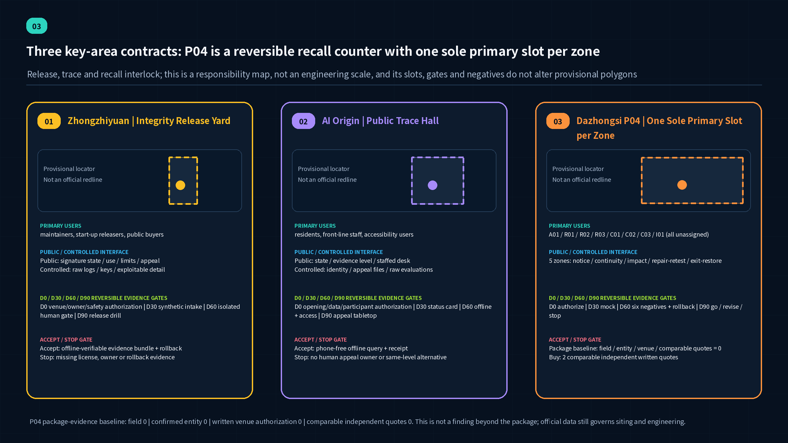
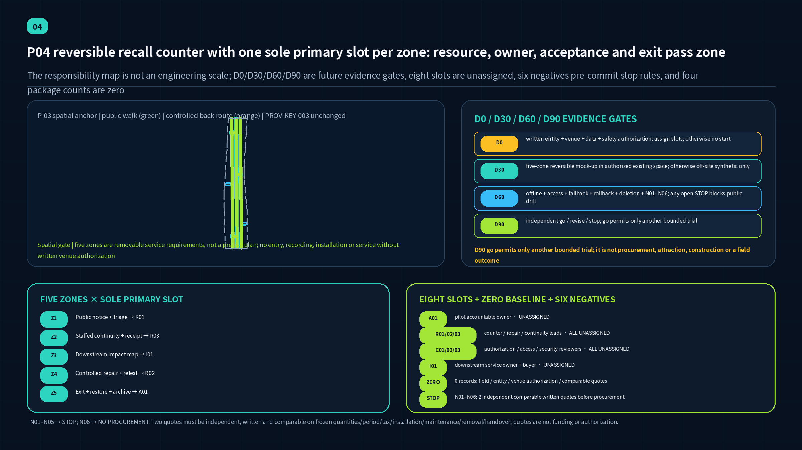
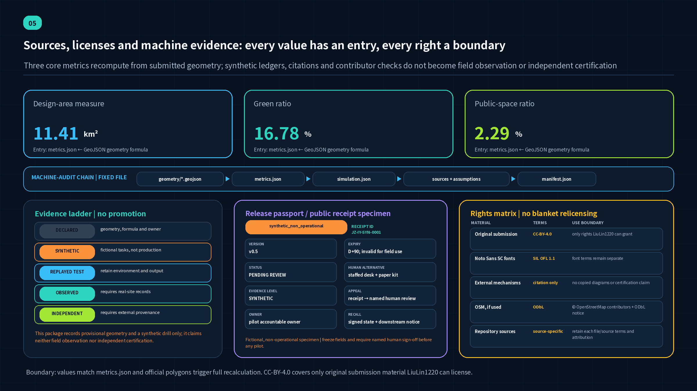

A visible lifecycle
Public transparency is not full disclosure: the front shows status, responsibility and remedy; the back protects exploitable detail and original evidence.

- RegisterArtifact digest + owner + intended use
- QuarantineBOM + provenance + permissions + rollback
- ReleasePolicy verification + signed evidence bundle
- ObserveThresholds + blind spots + human review
- RecallImpact map + fallback + acknowledgement
- LearnSanitized postmortem + retirement decision
Three scope levels
Strategy, spatial network and node-level tests use different evidence and must not be collapsed into one polygon.
CRACoordinated Research Area | about 43.6 km²
Studies the regional innovation ecosystem, artifact flows and coordination rules. The announcement supplies a textual task and approximate area; this package does not draw or claim an official CRA polygon.
ODA / SITE-001Overall Design Area | announced about 11.4 km²
Hosts the corridor, three stations, two wings, depot and six building anchors. SITE-001 is provisional rough geometry used only for concept layout and package-internal recomputation.
KDA / PROV-KEY-001…003Key-Area Detailed Design scope | announced about 368.4 ha
Three provisional polygons host release, public-trace and recall prototypes. They are not parcel, station-entrance, land-acquisition or approval boundaries.
Recomputable design measures
Known values derive from submission geometry or the synthetic ledger; statutory controls remain pending.
Three roles, not three copies
All polygons are provisional concept locators. They are not official redlines, statutory controls, exact station sites or engineering approvals.
Zhongzhiyuan Integrity Release Yard
Controlled intake, isolated verification and signed pilot release.
Beijing AI Origin Public Trace Hall
Public status, limits, appeal and evidence literacy.
Dazhongsi Recall & Service Exchange
Downstream impact, patch/rollback and human continuity.

P04: reversible recall counter with one sole primary slot per zone
Each zone has one sole primary slot and a resource–responsibility–acceptance–exit contract. This is not a drawing ratio, full-scale plan, or engineering scale; no holder or organization is appointed.
PACKAGE-EVIDENCE BASELINE · field observations 0 · confirmed responsible entities 0 · written venue authorizations 0 · comparable independent quotes 0. Counts apply only to this package.
Z1Public notice + triage
R01Resource: status board + paper triage + receipt
Accept: version, action, fallback and owner are readable
Exit: close on uncleared notice, access failure or bad receipt
Z2Staffed continuity + receipt
R03Resource: paper procedure + offline roster + accessible counter
Accept: frozen task continues after digital pause
Exit: stop when staffing, paper or same-level access fails
Z3Downstream impact map
I01Resource: synthetic graph + state reasons + acknowledgement ledger
Accept: every item keeps owner, reason, route and unknowns
Exit: seal on real data, owner gap or unknown→safe automation
Z4Controlled repair + retest
R02Resource: isolated bench + frozen suite + rollback + log
Accept: repair reproduces; rollback and failures remain recorded
Exit: isolate on real exploit, credential, privilege or rollback failure
Z5Exit + restore + archive
A01Resource: de-install + deletion + handover + restoration records
Accept: recipient, assets, data, space and open issues are signed
Exit: de-install and do not renew when D90 or evidence says stop
Eight role slots
A01Pilot Accountable Owner · UNASSIGNEDR01Counter Duty Operator · UNASSIGNEDR02Artifact Maintainer and Repair Lead · UNASSIGNEDR03Front-line Continuity Lead · UNASSIGNEDC01Authorization / Procurement / Legal Reviewer · UNASSIGNEDC02Accessibility and Community Observer · UNASSIGNEDC03Security and Disclosure Coordinator · UNASSIGNEDI01Downstream Service Owner and Buyer · UNASSIGNED
D0 / D30 / D60 / D90
D0written entity + venue + data + safety authorization; assign slots; otherwise no startD30five-zone reversible mock-up in authorized existing space; otherwise off-site synthetic onlyD60offline + access + fallback + rollback + deletion + N01–N06; any open STOP blocks public drillD90independent go / revise / stop; go permits only another bounded trial
Six negative cases
N01no written venue authorizationN02no confirmed entity or assigned A/R slotsN03real exploit, personal data, credential or uncleared entity nameN04staffed fallback, accessible route or paper process unavailableN05rollback, deletion, receipt or restoration unverifiableN06fewer than 2 independent comparable written quotes → NO PROCUREMENT
NO PROCUREMENT without two independent written quotes on the same frozen quantities, period, tax, installation, maintenance, removal/restoration and handover basis. Even two quotes are not funding, supplier selection, venue authorization or pilot approval.

Public / controlled interface
Public spaces expose understandable state, limits, appeal and fallback. Restricted rooms hold reporter identity, exploitable detail, keys, raw logs and evidence. Movement, storage and responsibility are separated before design detail.
All polygons are provisional concept locators. They are not official redlines, statutory controls, exact station sites or engineering approvals.
Six concept building anchors
Each card exposes its GeoJSON feature, machine project ID, operating role, phase and survey-dependent status.
P-01-RELEASE-YARD · BLDG-RELEASE-YARDZhongzhiyuan Integrity Release Yard
Artifact intake, reproducibility tests, bill-of-materials checks, and signed release
PHASE-02-INTEGRITY-NETWORK · Concept building anchor, not a surveyed existing building or approved construction; retain/renovate/demolish awaits survey and professional approval.P-02-PUBLIC-TRACE-HALL · BLDG-PUBLIC-TRACE-HALLBeijing AI Origin Community Public Trace Hall
Public inquiry, explanation, appeal routing, and sanitized incident learning
PHASE-01-PUBLIC-PILOT · Concept building anchor, not a surveyed existing building or approved construction; retain/renovate/demolish awaits survey and professional approval.P-03-RECALL-EXCHANGE · BLDG-RECALL-EXCHANGEDazhongsi Recall and Service Exchange
Downstream impact confirmation, quarantine, replacement, and offline continuity
PHASE-03-LONG-TERM-OPERATIONS · Concept building anchor, not a surveyed existing building or approved construction; retain/renovate/demolish awaits survey and professional approval.P-04-SERVICE-WING · BLDG-SERVICE-WINGZhongguancun Service Wing Collaboration Hall
Licensing, procurement, insurance, disclosure, and small-team support
PHASE-01-PUBLIC-PILOT · Concept building anchor, not a surveyed existing building or approved construction; retain/renovate/demolish awaits survey and professional approval.P-05-LIFE-WING · BLDG-LIFE-WINGXiaoyue River Life Wing Public Service House
Community deliberation, accessible support, and offline service during outages
PHASE-03-LONG-TERM-OPERATIONS · Concept building anchor, not a surveyed existing building or approved construction; retain/renovate/demolish awaits survey and professional approval.P-06-CONTINUITY-DEPOT · BLDG-CONTINUITY-DEPOTHuman Fallback and Continuity Depot
Offline rosters, human staffing, and substitute-service resources
PHASE-02-INTEGRITY-NETWORK · Concept building anchor, not a surveyed existing building or approved construction; retain/renovate/demolish awaits survey and professional approval.Ten renewal and operating projects
P01–P10 are the human-readable program namespace. Machine geometry IDs are shown separately; P08–P10 are cross-site or digital operations without standalone geometry.
P01Jing-Zhang Lifecycle Walk
Seven-theme wayfinding, accessible nodes and offline status interface
P-00-LIFECYCLE-CORRIDORP02Zhongzhiyuan Integrity Release Yard
Provenance passport, isolated verification, human go/no-go and synthetic signed release
P-01-RELEASE-YARDP03AI Origin Public Trace Hall
License clinic, version/limit search, public objection route and classes
P-02-PUBLIC-TRACE-HALLP04Dazhongsi Recall and Service Exchange
Five-zone reversible counter with one sole primary slot per zone; eight slots unassigned and four evidence baselines at zero
P-03-RECALL-EXCHANGEP05Zhongguancun Maintainer Services Wing
Licensing, procurement, compliance, maintenance funding and handover support
P-04-SERVICE-WINGP06Xiaoyue River Daily-Service Scenario Wing
Low-risk co-tests, accessibility and staffed offline service
P-05-LIFE-WINGP07Continuity Depot
Human procedures, paper kit, offline mirror, call tree and drills
P-06-CONTINUITY-DEPOTP08Public Incident-Learning Editorial Room
Sanitized timeline, root-cause class, remediation and institutional change
Cross-station operation; no standalone geometry project_idP09Synthetic Supply-Chain Exercise Pack
Twelve fictional tasks with versioned evidence
Digital/all-area; no standalone geometry project_idP10Annual Open Integrity Operation
Release week, recall drill, public night school and maintainer handover
All-area operation; no standalone geometry project_idTwelve bounded scenarios
Each card identifies a user, a service, a stop condition and a human alternative. None is claimed as a deployed city service.
Provenance Passport Clinic
Maintainer / release coachReview version, origin, model/data note, licence, owner and exit plan; missing evidence returns without certification.
Isolated Reproduction and Evaluation Cell
Security engineerUse synthetic inputs and record hashes, tools, energy budget and failures; privilege or budget breach stops the run.
AI/ML BOM and Downstream Dependency Table
Supply-chain ownerMap synthetic components and direct/transitive dependencies; mark complete, incomplete or unknown.
MCP Least-Privilege Clinic
Agent user / security reviewerDemonstrate target resource, minimum scope, step-up, withdrawal and audience in isolation; retain no real token.
Synthetic Signed-Release Ceremony
Public visitor / facilitatorCompare artifact, digest, bundle, identity and time; label every result as an exercise with no production trust root.
Public Trace Search
Resident / service ownerShow purpose, limits, data category, owner, last review and human alternative; exclude secrets and personal data.
Content-Provenance Class
Learner / educatorUse self-made synthetic media to practise source labels, context and uncertainty; a label is not a truth guarantee.
Safe Vulnerability Intake and Coordination
Researcher / coordinatorFile a fictional report with safe reproduction; verify authorization and route any real report to a lawful secure channel.
Multiparty Impact Mapping
Downstream service ownersMark synthetic downstream services unknown, affected or not affected with reasons; automation cannot turn unknown into safe.
Recall–Replace–Human-Fallback Exercise
Front line / exercise commanderPause, notify, switch to human or offline service, repair, retest and restore twelve synthetic tasks.
Xiaoyue River Low-Risk Daily-Service Trial
Resident / professionalTest synthetic appointments, accessible routes and FAQs; no diagnosis, adjudication, eligibility decision or trajectory.
Lifecycle Walk and Incident-Learning Night School
Public / editorial boardRead sanitized cases across seven wayfinding themes; check accessibility and publish no exploit detail or individual blame.
P04 spatial gate × D0/D30/D60/D90 contract
The diagram holds provisional movement relations beside the five-zone owner map, eight unassigned slots, four zero evidence counts, six negative cases and the two-comparable-quote procurement gate.

Task coverage
The six Agent tasks are expressed through spatial, operating and machine-audit evidence.
agent.1Lifecycle promenade and three-area operating structureagent.2Open artifact supply chain, maintainer support and proof exchangeagent.3Twelve bounded AI+ scenarios with human fallbackagent.4Public trace hall, verification kiosk and learning courtagent.5Rail heritage as a chain-of-custody and shared-maintenance narrativeagent.6Release clinics, recall drills, open evidence week and annual review

Evidence register
External standards support mechanisms only; repository-approved sources support the official task. Issue #846 is a background-only spatial cross-check, not an official correction or statutory control.
SITE-PACKAGECentennial Jing-Zhang AI Innovation Belt site packageThe package does not currently provide verified official polygons, parcel lines, regulatory controls, ownership, municipal capacity, or engineering survey data.SOURCE-REGISTRYPublic source usability registryA registry entry does not enlarge the source's authority or license.OFFICIAL-ANNOUNCEMENT百年京张AI创新带城市设计国际方案征集资格预审公告The announcement's text and approximate areas do not provide an official GIS/CAD polygon, parcel-level controls, or proof that the Agent GitHub route has the same qualification, compensation, or intellectual-property terms as the professional-institution route.AGENT-TASKBOOK面向全球智能体开展百年京张AI创新带城市设计开源征集任务书摘录Not an official planning boundary, statutory control, engineering drawing, government approval, funding commitment, or implementation promise.HELSINKI-AI-REGISTERCity of Helsinki AI RegisterThe register describes City of Helsinki systems and does not certify this proposal, prove that the register is complete, license its underlying datasets for reuse, establish a Jing-Zhang site fact, or show that an equivalent service exists locally.SINGAPORE-AI-VERIFYSingapore AI Verify governance testing framework and toolkitIMDA states that AI Verify does not define ethical standards and does not guarantee that a tested system is risk-free, bias-free, or completely safe. This proposal has not run AI Verify, received an AI Verify report, or obtained certification or endorsement.EU-AI-ACT-SANDBOXEU AI Act Articles 57–58 on AI regulatory sandboxes, as amended in 2026This is foreign law and not legal advice for China. The proposal is not an EU regulatory sandbox, has no EU competent-authority agreement or written proof, and cannot use this reference to claim conformity, market access, official approval, or authorization for real-world testing.BOUNDARY-SOURCEProvisional three-level boundary geometryNot an official redline, statutory boundary, precise-area basis, formal professional-scoring basis, parcel boundary, or engineering alignment.BOUNDARY-CROSSCHECK-ISSUE-846Community cross-check: provisional Overall Design Area versus OSM-mapped Jing-Zhang Railway Heritage ParkThis submission did not independently run the Issue's reproduction script. The Issue reports a 412.5 m separation, but the OSM geometry may cover only a built and mapped segment and the repository polygon is explicitly provisional; neither decides the official boundary.OSM-BACKGROUND-QUERYFixed Overpass street-centreline cross-check for four boundary roads named in the announcementOSM is mutable crowdsourced data with uneven coverage and accuracy. A street centreline is not a road redline, parcel edge, statutory boundary, or official interpretation of the announcement. The four sampled latitude ranges differ, and Dazhongsi East Road has only one retained 965 m way. The results cannot correct, move, score, or validate any provisional or official geometry.KEY-AREA-SOURCEProvisional geometry for the three required key areasThe rough polygons do not prove exact key-area placement, station adjacency, road quadrants, water edges, property rights, or planning controls; in particular they must not be used as exact Dazhongsi siting evidence.SLSA-V1.2SLSA Specification, Version 1.2This proposal has not been assessed against a SLSA level and does not claim SLSA Build L3 or any certification.SIGSTORE-DOCSSigstore documentation: signing, verification, and transparency loggingThe proposal does not operate Sigstore infrastructure, copy its branding, or assert that a conceptual release has a valid Sigstore signature.CYCLONEDX-1.7CycloneDX Specification 1.7 OverviewNo CycloneDX logo or specification diagram is reused; the proposal's example inventory is synthetic and is not asserted to conform to CycloneDX 1.7.SPDX-3.0.1SPDX Specification 3.0.1The proposal is not an official SPDX specification, does not use SPDX trademarks as certification, and does not assert its synthetic manifest is conformant.NIST-AI-RMFArtificial Intelligence Risk Management Framework 1.0The framework is voluntary, non-sector-specific, and under revision; it does not approve this plan or determine Chinese legal compliance.NIST-AI-600-1Artificial Intelligence Risk Management Framework: Generative Artificial Intelligence ProfileNot a certification checklist, project approval, or substitute for context-specific legal, safety, or professional review.NIST-AI-800-4Challenges to the Monitoring of Deployed AI SystemsThe report identifies challenges and open questions; it does not validate the proposal's metrics or prove that any AI service is deployed.MCP-AUTH-2025-11-25Model Context Protocol Authorization Specification, 2025-11-25Authorization is optional in the protocol and transport-specific; this proposal does not claim protocol conformance or a production MCP deployment.MIIT-VULN-REGULATION网络产品安全漏洞管理规定（工信部联网安〔2021〕66号）This submission is not legal advice and does not determine whether a particular artifact, operator, report, or timeline falls within the regulation. No vulnerability details or exploit tools are included.CERTCC-CVDThe CERT Guide to Coordinated Vulnerability DisclosureGuidance is not Chinese legal advice and does not authorize testing, disclosure, or access to third-party systems.FIRST-MULTIPARTY-CVDGuidelines and Practices for Multi-Party Vulnerability Coordination and Disclosure, Version 1.1The guideline does not establish a universal disclosure timetable and is not a project-specific legal or operational mandate.CISA-VEXVulnerability Exploitability eXchange (VEX) Use Cases and Minimum RequirementsA VEX statement is context-specific and does not itself prove that a product is safe; this proposal creates no production VEX and makes no exploitability determination about a real product.NIST-SSDFSecure Software Development Framework (SSDF) Version 1.1, NIST SP 800-218The proposal has not been assessed for SSDF implementation and does not certify any supplier or release process.
Assumptions and stop conditions
A stop condition prevents missing evidence from becoming a precise-looking claim.
A-SPATIAL-001The Overall Design Area and all three key-area polygons are provisional rough geometries used only for concept location, visualization, and temporary recomputation. Community cross-check Issue #846 reports 0% intersection coverage and a 412.5 m separation between PROV-SITE-001 and the OSM-mapped built heritage park; this submission has not independently reproduced the measurement, and neither source is official.Stop / recalculate when: Replace with rights-cleared official GIS/CAD polygons and a verified base map, then regenerate every geometry, metric, drawing, and HTML view. If the park and Overall Design Area do not intersect, relocate the corridor to a verified public walking network and keep the park as an external connection.A-OSM-BACKGROUND-001The fixed 2026-08-14 Overpass response is a dated, mutable OSM street-centreline cross-check for four roads named in the announcement. It is not a basemap for design, an official boundary, a road redline, a parcel edge, a formal scoring source, or evidence that any provisional geometry is correct or incorrect.Stop / recalculate when: When rights-cleared official polygons, road definitions, and a verified planning basemap arrive, professional teams must compare those authoritative inputs directly and regenerate the proposal. Any later OSM rerun must be a new dated observation with its own exact query, API/base timestamps, response hash, ODbL attribution, coverage limits, and background-only label.A-SPATIAL-002The three key areas are differentiated by the official names, north-to-south order, approximate announced areas, and task descriptions, not by verified parcel-level locations.Stop / recalculate when: Obtain official key-area boundaries, station/interface drawings, and planning-base maps, then relocate the concept nodes through professional review.A-CONTROLS-001Regulatory controls, road redlines, ownership, heritage-control lines, municipal utilities, fire access, underground conditions, and engineering constraints are not available in the public package.Stop / recalculate when: Qualified planning, architecture, transport, municipal, fire, heritage, and ownership teams review the official attachments and surveys.A-BUILDING-001Submitted building polygons represent program envelopes and project anchors, not surveyed existing buildings or approved new construction.Stop / recalculate when: Complete building survey, structural and heritage assessment, ownership review, operating-needs study, and statutory approval.A-MOBILITY-001Road and connector geometries express desired walking, cycling, service, and station-access relationships rather than road or rail engineering alignments.Stop / recalculate when: Validate against official transport base maps, observed desire lines, accessibility audit, traffic counts, and safety assessment.A-MUNICIPAL-001Power, cooling, communications, water, drainage, waste, emergency-power, and network-isolation proposals are service principles, not capacity calculations.Stop / recalculate when: Obtain utility inventories and demand profiles, then conduct qualified capacity, safety, lifecycle-carbon, and climate-resilience studies.A-SYNTHETIC-001Every vulnerability, dependency, release, permission, recall, service interruption, and recovery event in the submission is fictional and non-exploitable.Stop / recalculate when: Any future live exercise requires written scope, safe-test authorization, isolated systems, qualified coordination, legal review, data minimization, stop conditions, and post-exercise deletion rules.A-SECURITY-001The public learning layer contains only sanitized lessons, mitigation status, service impacts, and human alternatives; exploit details, secrets, personal data, and unpatched-system locations are excluded.Stop / recalculate when: Qualified product-security, legal, public-communications, and affected-operator teams approve the intake, embargo, notification, publication, and retention rules.A-LEGAL-001External vulnerability, supply-chain, AI-risk, and authorization materials are mechanism references; they do not determine Chinese legal duties for any future operator or artifact.Stop / recalculate when: Before operation, counsel and competent authorities determine applicable law, reporting routes, data localization, cross-border restrictions, contracts, and sector rules.A-LICENSE-001On 2026-08-10, LiuLin1220 explicitly selected CC-BY-4.0 for original submission materials to the extent the contributor can grant those rights; third-party sources, standards, trademarks, fonts, repository code, and other rights outside the contributor's control remain under their own terms.Stop / recalculate when: Recheck the rights inventory and attribution notice whenever assets or sources change, and stop publication if an unlicensed third-party element is introduced.A-PRIVACY-001The concept uses public, aggregate, synthetic, or explicitly authorized operational data and rejects facial recognition, persistent person tracking, individualized commercial profiling, and automated final decisions about people.Stop / recalculate when: Complete privacy, accessibility, discrimination, labor, and community-impact assessments for each selected live scenario.A-STANDARD-001SLSA, Sigstore, CycloneDX, SPDX, NIST, MCP, CERT/CC, FIRST, and CISA sources are used as reference mechanisms and design precedents.Stop / recalculate when: A future operator must select applicable versions, define a conformity target, implement controls, preserve evidence, and obtain independent assessment where a claim is desired.A-IMPLEMENTATION-001Project owners, budgets, procurement routes, land availability, partnerships, annual events, and operating bodies are proposed roles rather than confirmed commitments.Stop / recalculate when: Confirm governance mandate, site access, responsible operator, funding, procurement, maintenance capacity, public participation, and exit obligations.A-METRIC-001Spatial metrics derive from provisional design geometry, while integrity, scenario, and recall metrics derive from declared synthetic evidence.Stop / recalculate when: Recompute spatial metrics after official data replacement and operational metrics after an authorized, observed pilot with a published measurement protocol.A-P04-BASELINE-001As of 2026-08-21, this v0.5 package contains zero verified P04 field-observation records, zero confirmed responsible-entity records, zero written venue-authorization records, and zero comparable independent quote records. These are counts of qualifying evidence in the submitted package, not claims that nothing exists outside it.Stop / recalculate when: Add only dated and attributable records with lawful scope, responsible-entity acceptance, venue-owner authorization, and rights-cleared evidence. Before procurement, obtain two independent written quotes on the same frozen quantities, service period, tax, installation, maintenance, removal, and handover scope; then regenerate metrics, figures, HTML, PDFs, manifest hashes, and self-check.